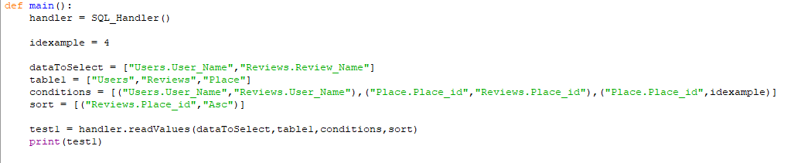

Database UI

Example usage code

This was a group project during university to make a management tool for a Database. The main objectives were:
Tools Used:
I worked on the API which was written in Python, its purpose was to parse a series of elements of what we required into sql queries
Instead of having basic functions where most of the SQL query is already set, the functions were designed to fully parse arrays of elements into a single query string. Because it fully parses the queries data can be searched by any item